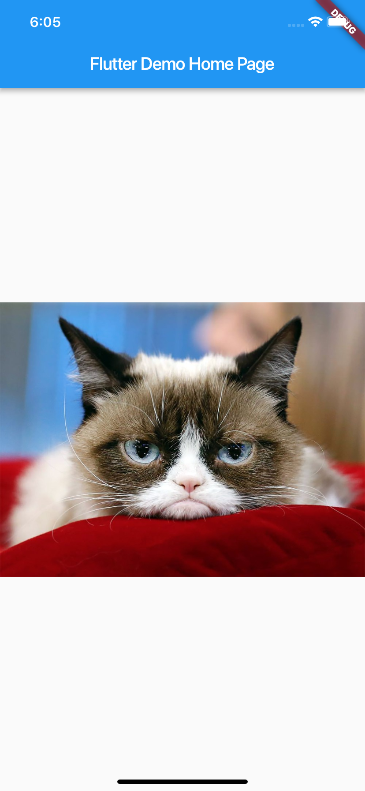
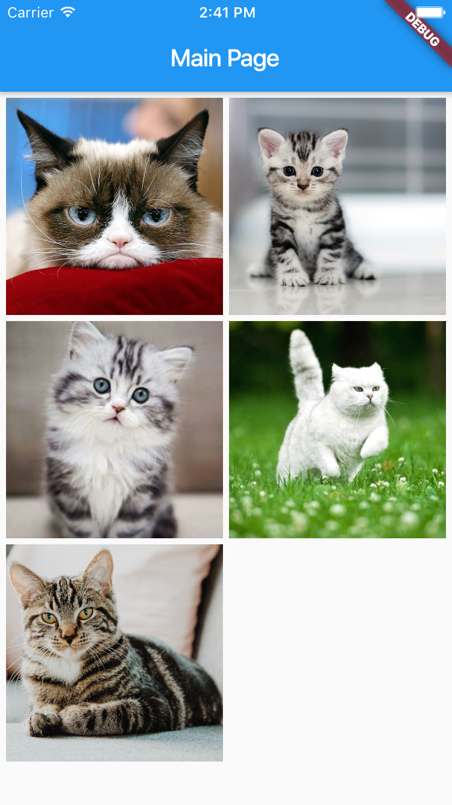

In lecture 2, TODO app provides a simple interface for adding text as user notes.
Generally, it is version 1.0 of application. It means, that now it is a releasable product and can be published to App Store or Google Play.
But, what next?
An app can have a different future:
Come back to TODO app.
As a user, I want to add a picture to my notes.
One notice. Each lesson in this module we create an app from scratch. That's why don't work with code from the previous lecture - we create a new project. It is a very important step in learning.
This user story looks real at our current step. Previously we had worked with Icon. It is a cool widget for adding prepared system icons. But we cannot add our images using this widget.
Create a new app!
Let's look closer on Image widget from the standard library.
In the documentation, we can find different variants for init Image widget:
Image.file - should understand that it is not a file from the project. It is a file on the device and as a route, we should use URL to this file.Image.network - for showing an image from URL.Image.asset - it is a variant which we will use in the current project.What is an image asset?
It is an image resource (.png, .jpg, etc) which is used in the project.
For initializing image with asset use - Image.asset('path'). Remove generated code and add Image widget to MyHomePage:
class MyHomePage extends StatefulWidget {
MyHomePage({Key key, this.title}) : super(key: key);
final String title;
@override
_MyHomePageState createState() => _MyHomePageState();
}
class _MyHomePageState extends State<MyHomePage> {
@override
Widget build(BuildContext context) {
return Scaffold(
appBar: AppBar(
title: Text(widget.title),
),
body: Center(
child: Column(
mainAxisAlignment: MainAxisAlignment.center,
children: <Widget>[
Image.asset(
'resources/cats/1.jpg',
fit: BoxFit.cover)
],
),
), // This trailing comma makes auto-formatting nicer for build methods.
);
}
}
Everything looks correct but... we don't see our image when run app. The reason - we didn't notify our project that resources/cats/1.jpg is the asset.
About fit parameter in image and different variant for it you can find in the documentation.
Now our target is set for our picture asset status in our project.
For it, we need pubspec.yaml file. This file contains dependencies information in the project. It can be third-party libraries, fonts, images, etc.
Now we add information about our image file:
flutter section.assets section.flutter:
assets:
- resources/cats/1.jpg
Now we should just rebuild project.

Add information about all prepared pictures in pubspec.yaml file and check that after changing the asset path in Image widget, a new image is shown on the display.
At the current step, we have a layout with one image. Our next step is creating a layout for all prepared pictures. In the previous lecture, we worked with ListView. It can be useful if we want to have only one picture in the row, but now we want to show at least 2 per row.
For this case, Flutter provides standard widget - ListView. This widget is very same to ListView. In the documentation, we can find useful tutorial for creating our list.
@override
Widget build(BuildContext context) {
return Scaffold(
appBar: AppBar(
title: Text(widget.title),
),
body: GridView.count(
crossAxisCount: 2,
padding: EdgeInsets.all(5),
mainAxisSpacing: 5,
crossAxisSpacing: 5,
children: <Widget>[
Image.asset(
'resources/cats/1.jpg',
fit: BoxFit.cover),
Image.asset(
'resources/cats/2.jpeg',
fit: BoxFit.cover),
Image.asset(
'resources/cats/3.jpg',
fit: BoxFit.cover),
Image.asset(
'resources/cats/4.jpg',
fit: BoxFit.cover),
Image.asset(
'resources/cats/5.jpeg',
fit: BoxFit.cover)
],
)
);
}

And now we can move this widget to separate file main_page.dart
We start by showing one picture and move to show a list of them.
Next step is moving back to showing one picture because we have a story:
As a user, I want to see image details screen.
It is a page with simple UI - just our image. But it is a separate widget with MainPage, that's why we create new file image_details_page.dart. Here, we just rewrite our code for showing one image on the screen.
Just control paddings and other UI elements for showing image in the best way for the user. Do not forget about Scaffold
class ImageDetailsPage extends StatelessWidget {
@override
Widget build(BuildContext context) {
return Scaffold(
appBar: AppBar(title: Text('Details'),),
body: Center(
child: Image.asset('resources/cats/1.jpg'),)
);
}
}
Now, you can show ImageDetailsPage as the main page in the app via adding import in the main file and using it instead of MainPage
And the last step we should add an image as a property to this screen. We initialize Image widget with asset info. Asset path is a string. That's why we add String property to the widget class and add it as a parameter in init.
class ImageDetailsPage extends StatelessWidget {
final String assetPath;
ImageDetailsPage({
Key key, @required this.assetPath
}) : assert(assetPath != null),
super(key: key);
@override
Widget build(BuildContext context) {
return Scaffold(
appBar: AppBar(title: Text('Details'),),
body: Center(
child: Image.asset(this.assetPath),)
);
}
}
Now ImageDetailsPage can be created as ImageDetailsPage(assetPath: 'resources/cats/1.jpg').
The last but not the least task. Open image details page when a user taps on the image in the list.
As a variant, we can use GridTile for our picture cells in GridView. It provides onTap for handle user tap.
Another variant is using InkWell. It is a widget for handling user tap.
InkWell(
onTap: () {},
child: Image.asset(
'resources/cats/1.jpg',
fit: BoxFit.cover)
)
Now we can handle user tap but we don't have any visual representation of an action. For adding smooth animation when tap we can use Ink widged. There is a special constructor for this widget for showing the image. As a parameter, we see the image, but it is not Image widget which we used. We need AssetImage.
Ink.image(
image: AssetImage('resources/cats/2.jpeg'),
fit: BoxFit.cover,
child: InkWell(onTap: () {},),
)
Just rewrite all pictures with this widget for action handling.
Last step.
We should open a new page when tapping on the image. Flutter provides Navigator widget for it. In documentation we can find information about different actions in navigation. Now push and pop are interesting for us. We have a stack of pages in app and push is adding a new page to the top and pop is removing the top page from the stack. In this case, we name our pages as MaterialPageRoute.
And or details screen has a constructor with asset parameter. So, we can send data from one screen to another. Let's connect all this moment together.
Ink.image(
image: AssetImage('resources/cats/1.jpg'),
fit: BoxFit.cover,
child: InkWell(onTap: () {
Navigator.push(
context,
MaterialPageRoute(
builder: (context) => ImageDetailsPage(assetPath: 'resources/cats/1.jpg')
)
);
}),
),
Do the same for all pictures. Pop action works automatically.
The app is ready!
There are 3 tasks for homework.
builder. Your task is show "Add" button on the list screen and add a new image by a tap on the button.Good luck!